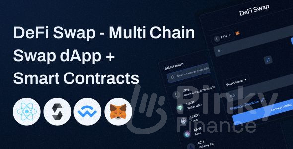

Decentralized Finance (DeFi) is inherently multi-chain, yet the process of moving and swapping assets between ecosystems remains fragmented and complex. Defi Llama Swap addresses this critical challenge by acting as an intelligent orchestrator for cross-chain transactions. It unifies liquidity across disparate blockchains, selecting and chaining together the most efficient bridging and swapping protocols to offer users a single, streamlined execution path, thereby making genuine interoperability a practical reality for the average DeFi user.
Defi Llama Swap does not operate its own proprietary bridge; instead, it serves as a **bridge aggregator and optimizer**, intelligently utilizing existing, established infrastructure.
Its routing engine treats the act of "bridging" as merely one step in a multi-step, overall swap transaction, evaluating the cost and time of bridging alongside the liquidity of the target chain.
The system is programmed to identify the most secure and cost-effective sequence: starting chain swap -> bridge protocol execution -> destination chain swap, all within a calculated, optimized route.
By integrating and comparing multiple third-party bridging protocols (like those based on lock-and-mint or liquidity network models), Llama Swap ensures the user gets the best combination of speed and cost.
This process abstracts the technical complexity of cross-chain communication from the user, who simply selects a token on one chain and a different token on another chain.
The technology uses the extensive data from the DefiLlama platform to verify the Total Value Locked (TVL) and security reputation of the underlying bridging protocols before routing funds through them.
In essence, Llama Swap’s role is to solve the complex "travel itinerary" problem, finding the fastest and cheapest connection between two points (chains) that might require multiple legs (swaps and bridges).
This seamless integration helps to break down the walls between isolated blockchain ecosystems, creating a more liquid and unified global DeFi market for the end-user.

Defi Llama Swap leverages the comprehensive network coverage of the entire DefiLlama platform, granting it a competitive advantage in supporting a vast array of chains.
Its support extends across major Layer 1 blockchains like Ethereum, BNB Chain, Avalanche, and Fantom, ensuring access to the deepest foundational liquidity pools.
Crucially, it features extensive compatibility with leading Layer 2 scaling solutions, including Arbitrum, Optimism, Polygon (via its various scaling solutions), and emerging ZK-rollups.
The system continuously and rapidly integrates new, high-growth ecosystems, often supporting a wider breadth of less-common chains than competitors, following the data trail laid by the TVL tracker.
This broad scope is vital for cross-chain functionality; the larger the number of supported chains, the higher the probability that Llama Swap can find a direct and efficient path for the user’s assets.
The selection process for integrating new networks is data-driven, prioritizing chains that demonstrate significant user activity, TVL growth, and a robust ecosystem of DEXs and liquidity.
For the user, this means less platform hopping; they can manage trades and assess opportunities across a diverse portfolio of chains all within a single, unified interface.
The goal is to create a singular point of access where the user views the entire decentralized space as one interconnected market, rather than a collection of walled gardens.
To facilitate its cross-chain function, Defi Llama Swap integrates with a curated and evolving list of leading, audited bridging and cross-chain messaging protocols.
The selection criteria for integration are rigorous, focusing on the bridge’s security track record, its liquidity depth for the desired asset pair, and the speed of its execution.
Protocols utilizing liquidity networks (where LPs provide assets on both sides) are often favored for their speed and capital efficiency, allowing for near-instantaneous, albeit fee-incurring, transfers.
Llama Swap's routing engine intelligently assesses the **trust assumptions** of each bridge, ensuring that the chosen protocol meets the user's implicit security requirements for asset movement.
Integration extends beyond simple token bridges to include more sophisticated **cross-chain swap protocols** that bundle the bridging and swapping into a single, atomic transaction where possible.
The platform constantly monitors the performance and associated fees of each integrated bridge, dynamically adjusting the routing to use the one that is currently the most economical for the user.
By aggregating the best of breed in bridging technology, Llama Swap insulates the user from the necessity of researching and trusting individual bridge UIs, centralizing the risk assessment.
This agnostic approach to bridging technology means that as new, more secure, and faster methods emerge (like ZK-proof bridges), Llama Swap can quickly incorporate them to maintain its optimal service.
The single greatest benefit of multi-chain routing is the significant enhancement in **capital efficiency** for the end-user, regardless of where their assets are currently located.
It allows users to access the deepest liquidity and lowest prices for a specific token, even if that liquidity resides on a different, lower-fee chain than the user's starting chain.
The system automates complex financial arbitrage: it performs the instantaneous cost-benefit analysis of paying a bridge fee versus achieving a better final token output.
This capability minimizes **liquidity fragmentation**, as users are no longer constrained by the liquidity pools only available on their current blockchain, opening up access to global DeFi opportunities.
For protocols, Llama Swap’s multi-chain routing drives volume and TVL to networks that offer superior execution, rewarding chains that successfully scale and reduce transaction costs.
It acts as a strong mitigating factor against high gas fees; a user can strategically move assets to a cheaper L2 via the aggregator to perform multiple swaps economically.
The convenience of a single, unified transaction—from one token on Chain A to another token on Chain B—saves the user immense time, manual effort, and reduces the risk of human error.
Ultimately, multi-chain routing transforms DeFi from a series of isolated markets into a single, cohesive marketplace where liquidity is fungible and always accessible at the optimal price.
Cross-chain swap speed is a critical metric, heavily dependent not just on Llama Swap's routing speed, but on the latency of the underlying bridging and target chain confirmation times.
Llama Swap's internal **off-chain routing calculation** is near-instantaneous, quickly identifying the fastest available bridge route and the most liquid pools.
The actual execution speed is dominated by the bridge protocol chosen; fast, liquidity-network bridges can finalize a transfer within minutes, while slower, canonical bridges might take longer due to required block finality.
Llama Swap's transparency provides users with an **estimated completion time** during the transaction, allowing them to choose a faster, slightly more expensive bridge route if speed is a priority.
The system minimizes unnecessary delays by pre-fetching data and optimizing the sequence of on-chain calls, reducing the overall transaction complexity and associated wait times.
For short-distance swaps between highly interconnected L2s (e.g., Arbitrum to Optimism), the speed can be surprisingly rapid, often nearing the speed of single-chain L2 execution.
However, it is vital to note that Llama Swap cannot bypass the fundamental security requirements of the underlying chains; a cross-chain swap must wait for block confirmations on both the source and destination chains.
The ongoing roadmap includes integrating newer technologies like optimistic rollups and ZK-bridges, which promise to radically improve the finality and speed of cross-chain asset movement.
Defi Llama Swap's greatest contribution to interoperability is its commitment to making the experience feel as **simple and single-chain** as possible, despite the complex underlying mechanics.
The user interface successfully hides the complexity of bridging; the user simply selects the source chain and token, the destination chain and token, and the system handles the entire choreography.
The entire process is contained within a single transaction interface, eliminating the need for the user to visit three or four separate protocol websites (source DEX, bridge, destination DEX, etc.).
Llama Swap provides continuous, clear feedback during the cross-chain transaction, indicating which step (approval, bridging, final swap) is currently underway, mitigating user anxiety during the wait period.
By pre-calculating the **total all-in cost** (including source swap fee, bridge fee, and destination swap fee), the platform eliminates hidden costs and surprise expenses often associated with manual bridging.
The familiar, data-centric Defi Llama design offers a sense of security and reliability, reinforcing user confidence in what is otherwise a high-risk technical operation.
The unified wallet connection across all supported chains further simplifies the process, preventing the need for tedious manual network switching and re-connecting the wallet repeatedly.
In essence, Llama Swap transforms a multi-hour, multi-step chore for a developer into a seamless, single-click user experience for the everyday DeFi participant.
/card.png)
Despite its advanced architecture, Defi Llama Swap faces significant technical hurdles inherent to the cross-chain environment, primarily revolving around security and latency.
The greatest challenge is the **security of the underlying bridges**; Llama Swap is only as secure as the weakest bridge protocol it integrates, exposing users to the risks of bridge exploits and hacks.
Achieving true **atomic composability**—guaranteeing that the entire multi-chain transaction succeeds or fails as a single unit—remains a complex technical problem across heterogeneous blockchain environments.
Maintaining real-time, accurate **liquidity and latency data** for dozens of chains and their corresponding bridges is an immense undertaking, requiring highly robust and constantly updated API infrastructure.
Managing the **Maximal Extractable Value (MEV)** risk across multiple chains is complex, as a swap on the source chain might be front-run, or the bridge transfer could be exploited.
The challenge of **gas estimation** is compounded; Llama Swap must estimate the cumulative gas fees across two separate chains and the gas cost for the bridge transaction itself, which can be highly volatile.
Ensuring a consistent and smooth **refund or error handling process** when a cross-chain transaction fails midway is technically difficult and crucial for user protection.
Finally, continuous integration of the rapidly evolving standards—from canonical bridges to the latest ZK-based cross-chain messaging systems—demands constant, resource-intensive development work.
The future of multi-chain DeFi, as influenced by Defi Llama Swap, points toward a truly **unified, single-market experience** where the underlying chain is merely a technical detail.
Llama Swap is set to become the industry standard for **cross-chain price discovery**, ensuring that no matter where liquidity is locked, the user always accesses it at the global optimal rate.
The platform will likely drive the adoption of more **secure and capital-efficient bridging standards**, prioritizing those that offer faster finality and lower trust assumptions.
Its meta-aggregation model will accelerate the decline of single-chain aggregators, positioning a comprehensive, multi-chain orchestrator as the indispensable tool for serious DeFi participants.
The roadmap will focus on integrating complex financial primitives, enabling users to perform cross-chain yield farming or collateral transfer directly via an optimized, single interface.
By reducing the technical barrier to interoperability, Llama Swap will unlock billions in currently isolated liquidity, driving greater overall efficiency and resilience across the entire decentralized economy.
Ultimately, the success of Defi Llama Swap will be measured by its ability to render the entire multi-chain complexity invisible, allowing users to focus purely on financial outcomes rather than network mechanics.
This commitment to seamless interoperability ensures that Defi Llama Swap will be a foundational piece of infrastructure for the next generation of decentralized finance applications.